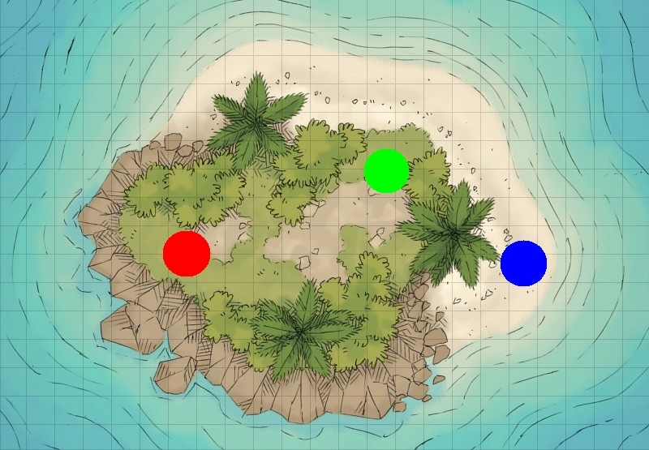

11 Politik erleben
| Themen | Inselspiel |
| Lernziele | Sie erleben Politik selbst. |
Die heutige Stunde beginnt mit einer Schiffsreise. Als erstes müssen Sie sich für die Reise anmelden. Nehmen Sie einen kleinen Zettel und notieren Sie Ihren Namen, Ihren Beruf und drei Dinge, die Sie auf die Reise mitnehmen.
Anmeldeschein
Name _____________________
Beruf _____________________
Gepäck _____________________Machen Sie sich bereit! Schließen Sie jetzt die Augen und folgen Sie meiner Stimme (Text).
Hafen
Sturm
Insel

Öffnen Sie jetzt die Augen. Bilden Sie drei Gruppen. Besprechen Sie in der Gruppe, wie Sie auf dieser einsamen Insel überleben können.
Wir müssen dringend Wasser finden / … suchen / …
Ich habe … im Gepäck! Das ist nützlich für …
Wir brauchen auf jeden Fall …
Wir müssen uns schnell vor … schützen.
Ich bin … von Beruf! Ich kann …
Kommen Sie zu einem “Inselrat” in einer großen Gruppe zusammen. Wie überlebt Ihre Gruppe? Berichten Sie.
Bei Ihrer Ankunft sind Sie auf der Insel ohne Gesetze und Regeln. Nach langer Diskussion entscheiden Sie sich für eine dieser Gesellschaftsformen.
| Gesellschaftsform | |
|---|---|
| autoritär-diktatorisch | Einer in Ihrer Gruppe hat bis jetzt die anderen angeführt, Entscheidungen getroffen und Aufgaben verteilt. Die anderen gewöhnen sich daran, und ohne viel nachzudenken, tun sie, was ihnen gesagt wird. |
| egalitär-sozialistisch | In Ihrer Gruppe wird viel diskutiert, alle Entscheidungen werden ausführlich besprochen. Sie entscheiden, eine Kommune zu gründen, die nach der Regel lebt: Jeder tut, was er kann, und jeder bekommt, was er braucht. Alle sind gleich und für alle gelten dieselben Regeln. |
| liberal-demokratisch | Jeder in Ihrer Gruppe tut, was er oder sie möchte, um seine eigene Situation zu verbessern. Wenn ein größeres Problem entsteht, das alle betrifft, verhandeln Sie über allgemeine Regen und kooperieren. Ansonsten geht jeder seine eigenen Wege. |
Diskutieren und entscheiden Sie jetzt folgende Fragen! Überlegen Sie genau und bedenken Sie die Folgen Ihrer Entscheidungen. Schreiben Sie dann Ihre Gesetze und Entscheidungen sorgfältig auf.
- Wie werden in Ihrer Gruppe Gesetze gemacht?
- Wer bestimmt, welche Gesetze gelten sollen?
- Wem gehört was? Was ist Privatbesitz, was gehört allen?
- Welche Grundrechte haben die Menschen auf in Ihrer Gruppe?
- Welche Gesetze gelten für die Umwelt (Wasser, Luft, Pflanzen, Tiere)?
Ich meine, dass…
Meiner Meinung nach ist …
… sollte freiwillig / Pflicht sein.
Alle / Niemand darf / soll / muss …
Ich möchte / möchte nicht … machen.
Ich will mehr / weniger verdienen.
Kommen Sie zu einem “Inselrat” in einer großen Gruppe zusammen. Stellen Sie sich Ihre Gesetze vor und diskutieren Sie unterschiedliche Regeln.
Ihre Gesellschaft entwickelt sich. Sie müssen die Wirtschaft organisieren. Einige Leute auf der Insel wollen ihre Gruppe wechseln und in eine andere Gruppe einwandern! Wie regeln Sie das?
Wie regeln Sie die Arbeitsaufteilung und die Freizeit? Welche Regeln gelten für Männer, Frauen und Kinder?
Wer von Ihnen macht was? (Pflanzen anbauen, Tiere jagen, Gebäude errichten, kontrollieren…)
Wie und wieviel werden Sie bezahlt?
Wer darf in Ihre Gruppe einwandern?
Welche Voraussetzungen muss sie oder er erfüllen?
Beantworten Sie diese Fragen und beachten Sie dabei Ihre Gesetze und Vereinbarungen.
Kommen Sie zu einem “Inselrat” in einer großen Gruppe zusammen. Stellen Sie sich Ihre Gesetze vor und diskutieren Sie unterschiedliche Regeln.
Schreiben Sie einen kleinen persönlichen Bericht über Ihre Erfahrungen auf der “Insel” (150 Wörter).
- Wie war die Erfahrung auf der Insel? Wie haben Sie sich auf der Insel gefühlt?
- Was haben Sie erfahren oder gelernt, das Sie von der Insel in Ihre Heimat mitnehmen?